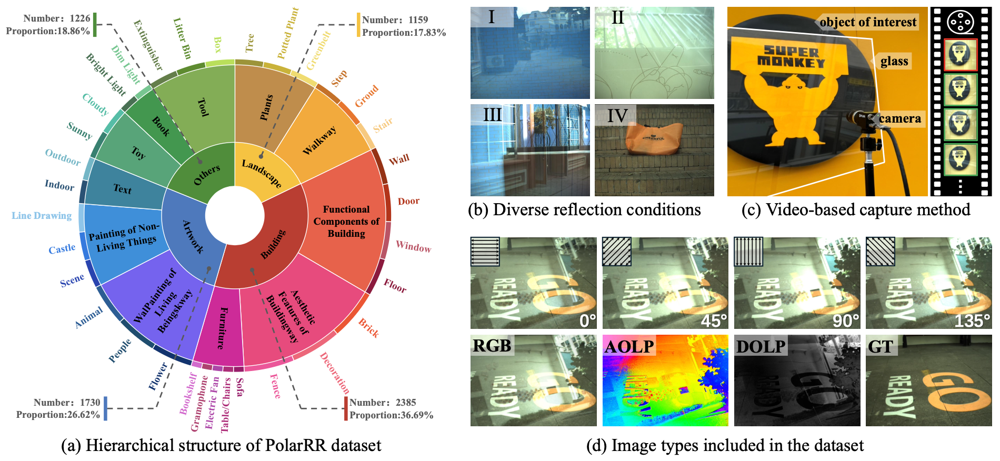
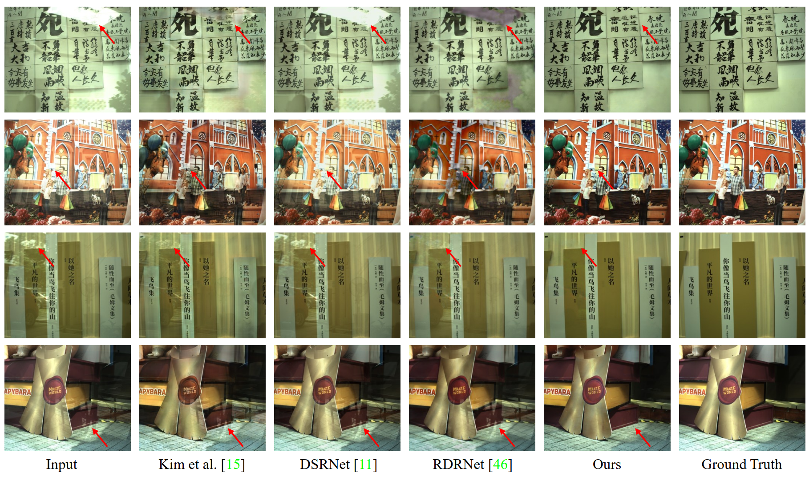

PolarFree: Polarization-based Reflection-Free Imaging


PolarFree effectively leverages polarization information to remove reflections, achieving superior performance in challenging scenes.
Abstract
Reflection removal is challenging due to complex light interactions, where reflections obscure important details and hinder scene understanding. Polarization naturally provides a powerful cue to distinguish between reflected and transmitted light, enabling more accurate reflection removal. However, existing methods often rely on small-scale or synthetic datasets, which fail to capture the diversity and complexity of real-world scenarios.
To this end, we construct a large-scale dataset, PolarRR, for polarization-based reflection removal, which enables us to train models that generalize effectively across a wide range of real-world scenarios. The PolarRR dataset contains 6,500 well-aligned mixed-transmission image pairs, 8×larger than existing polarization datasets, and is the first to include both RGB and polarization images captured across diverse indoor and outdoor environments with varying lighting conditions.
Besides, to fully exploit the potential of polarization cues for reflection removal, we introduce PolarFree, which leverages diffusion process to generate reflection-free cues for accurate reflection removal. Extensive experiments show that PolarFree significantly enhances image clarity in difficult reflective scenarios, setting a new benchmark for polarized imaging and reflection removal.
Dataset

Overview of the PolarRR dataset.
(a) Hierarchical structure of scenes is shown in the ring, with legends indicating sample counts
and subset types.
(b) Typical scenes illustrating varied reflection conditions: I. smooth blending of reflection and refraction, II. abrupt
reflection with mixed components, III. reflection dominant over transmission, and IV. minimal or no reflection.
(c) Video-based capture method (details in Sec. 3).
(d) We provide polarized images at angles ϕ = 0, 45, 90, and 135 degrees, along with derived AoLP, DoLP, and
a well-aligned unpolarized image. The dataset also includes ground truth transmission and estimated reflections, all available in both raw
and RGB formats.
Method

Pipeline of PolarFree. (a) During inference, PolarFree leverages polarized and RGB images as inputs, which are feeds into a conditional diffusion model to generate the prior z0. The generated prior, along with the inputs, is then passed to the reflection removal backbone Fremove to remove reflections. (b) PolarFree is trained in two stages. (1) A prior encoder extracts a reflection-free prior z0 from clean transmission images and polarization cues, which serves as the supervision for the conditional diffusion model in stage two. (2) The conditional diffusion model is trained to progressively denoise noisy images, supervised by the prior from stage one, ensuring robust reflection separation.
Results

Qualitative comparisons on the PolarRR dataset. PolarFree provides cleaner reflection removal with sharper edges and better color preservation. In contrast, previous methods often suffer from color distortions or imperfect reflection removal, especially in areas with complex reflections. Our method maintains high fidelity to the ground truth, especially in challenging regions with low light and subtle reflections.
BibTeX
@inproceedings{polarfree2025,
title = {PolarFree: Polarization-based Reflection-Free Imaging},
author = {Mingde Yao, Menglu Wang, King-Man Tam, Lingen Li, Tianfan Xue, Jinwei Gu},
journal = {CVPR},
year = {2025},
}